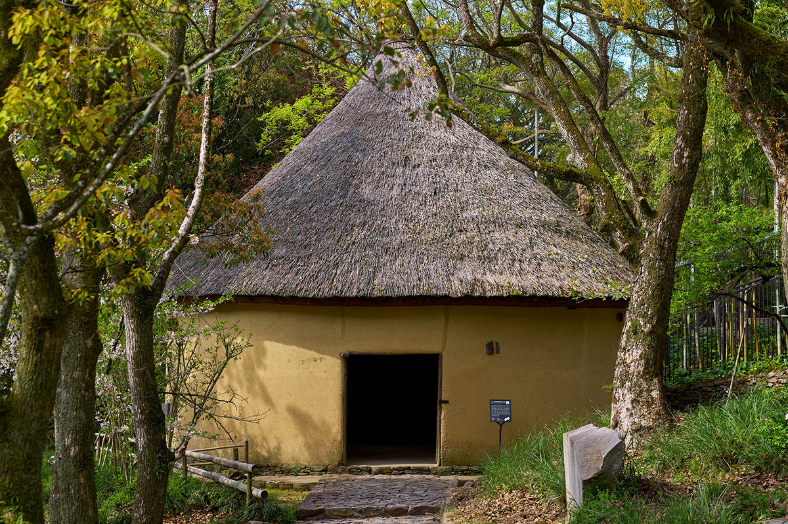
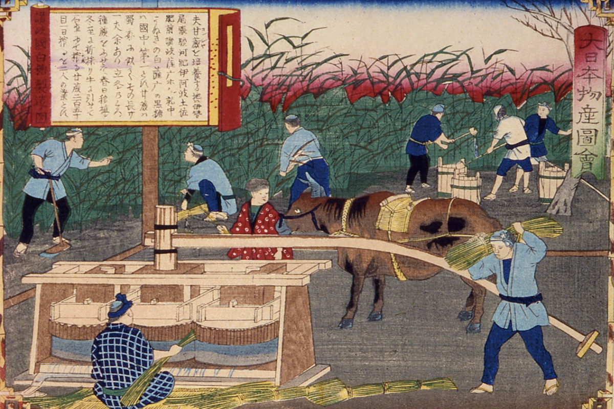
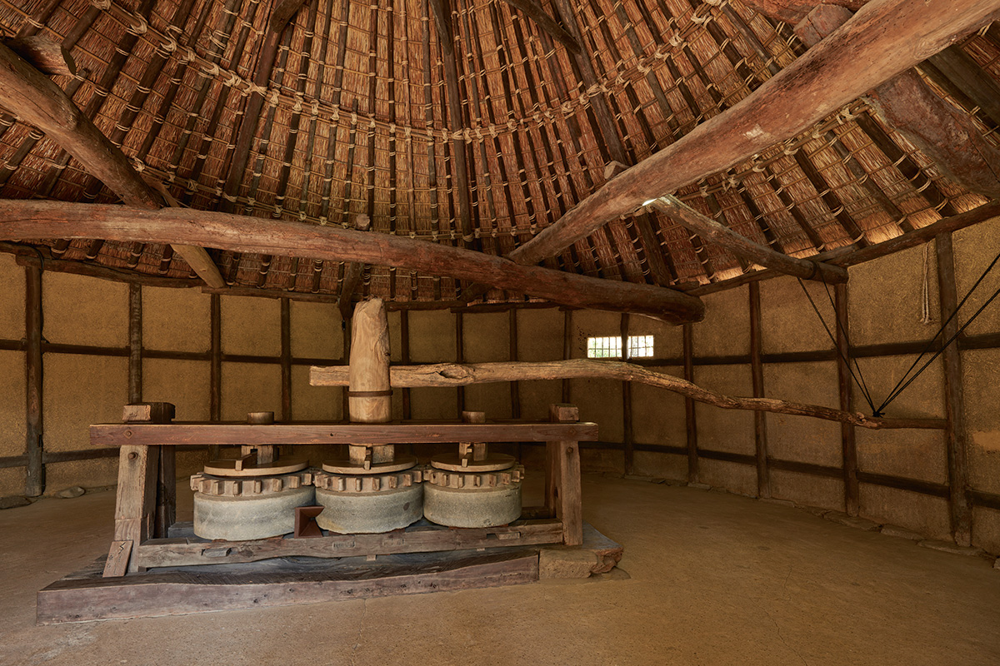
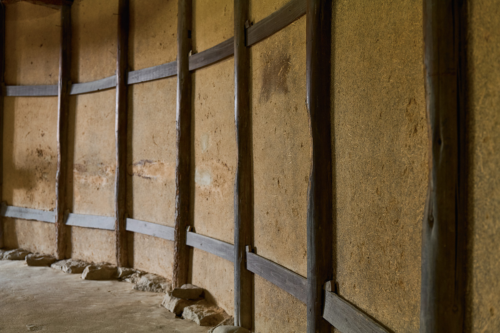
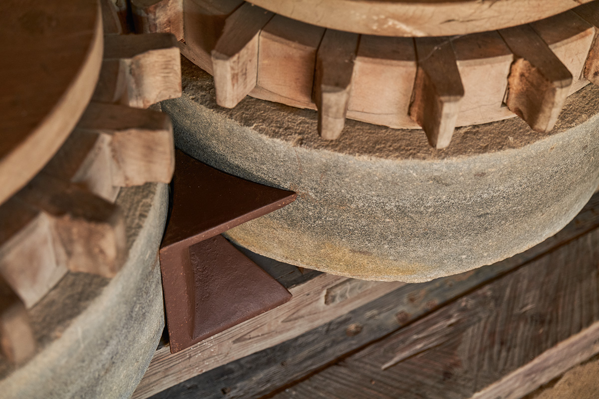
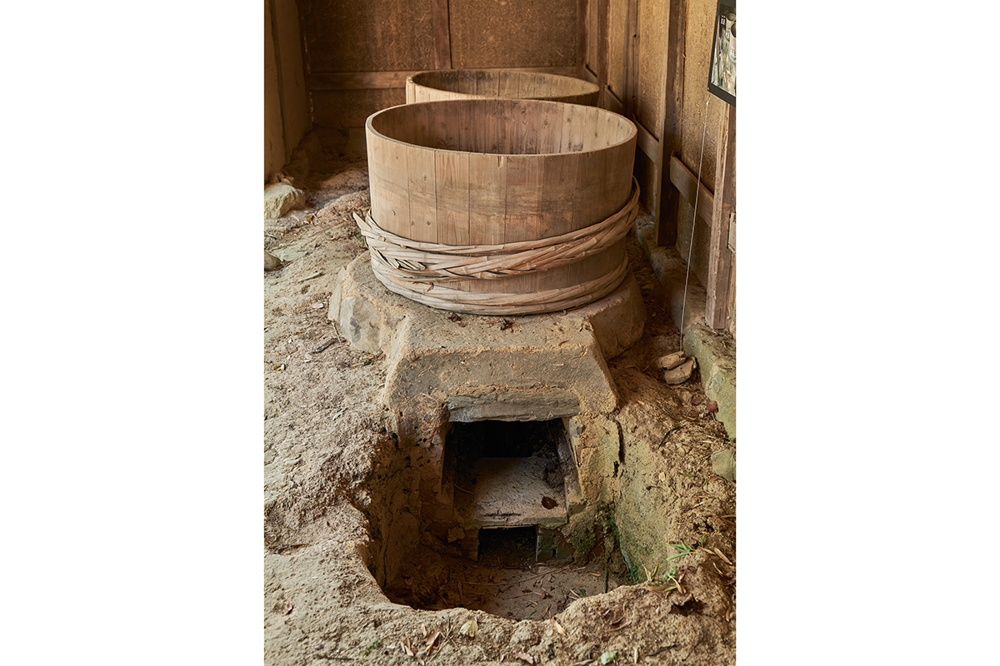
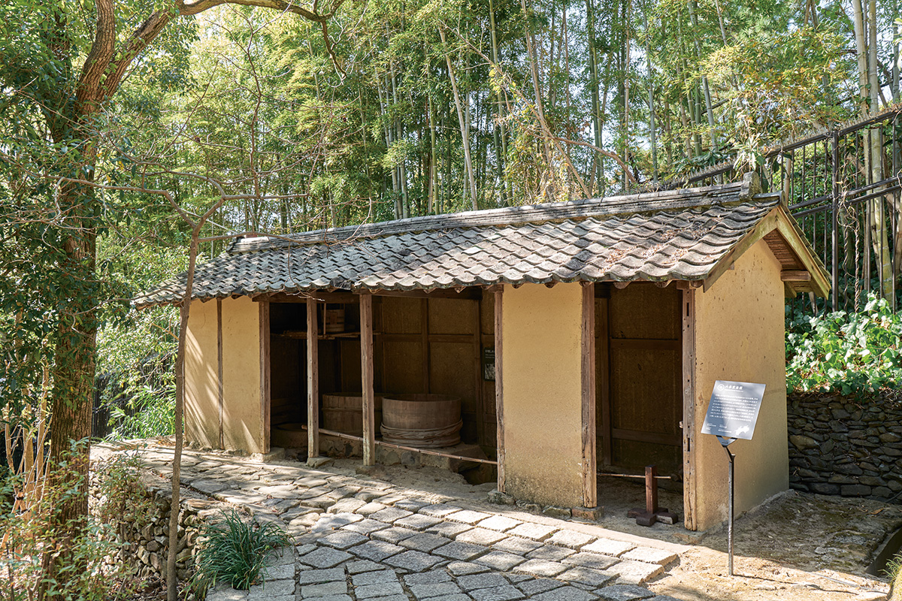
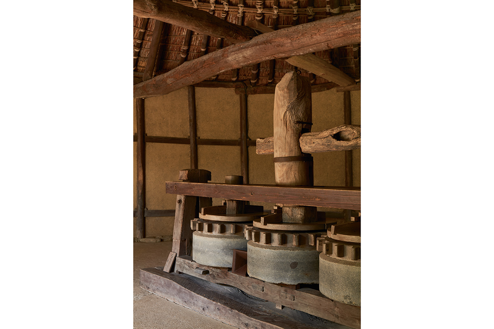
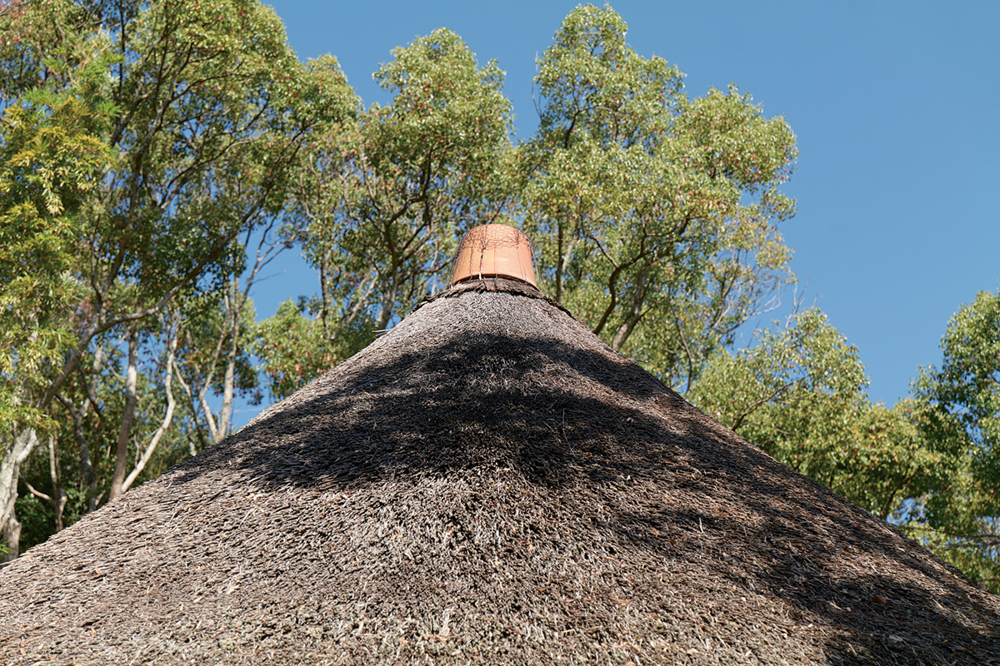
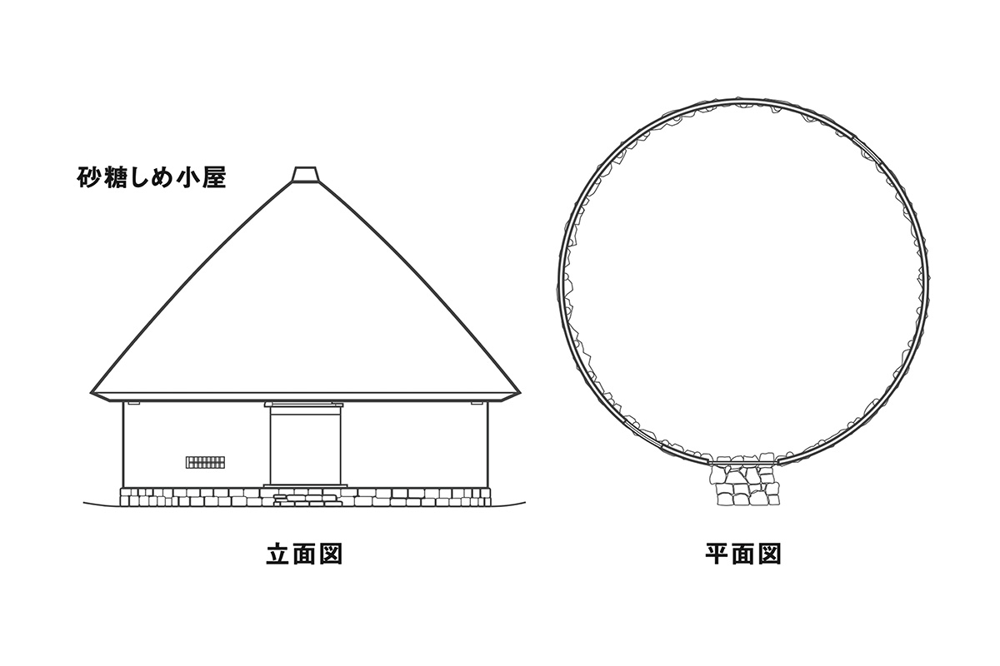

Префектура Кагава · Сикоку-мура · Сахарный промысел
Сахарные хижины Сикоку-муры: как Сануки делала белый сахар

Две круглые хижины под конусными соломенными крышами сохранились в Японии только в музее под открытым небом Сикоку-мура под Такамацу. В них отжимали сок сахарного тростника, из которого Сануки варила белый сахар, известный всей стране.
Три белых
Соль, хлопок и сахар Сануки
Есть выражение «три белых продукта Сануки», по-японски сампаку. Три белых это соль, хлопок и сахар. Сахар из Сануки, старого названия Кагавы, славился качеством как «васамбон из Сануки», тонкий сахар ручной выделки. В годы Тэмпо (1830–1844) его выпускали больше, чем где-либо в стране, и говорят, что именно сахар приносил Сануки самый большой доход.

В середине эпохи Эдо японский сахар это в основном тёмный сахар княжества Сацума, а белый везли из Китая и других стран. Делать собственный белый сахар велел восьмой сёгун Токугава Ёсимунэ. В Сануки пятый владетель Такамацу Мацудайра Ёритака поручил лейб-медику Икэда Гэндзё и его ученику Сакияма Сюкэю изучить сахарное производство по всей Японии: к 1798 году, десятому году Кансэй, способ был освоен.
Улучшения продолжались, и на равнине Сануки выросла целая система промысла: поля, где растили и убирали тростник, хижины отжима, где из него выдавливали сок, и дома с котлами, где сок уваривали и очищали от примесей.
Устройство
Почему хижина круглая
Круглая форма у хижины не задумка архитектора, а следствие работы. Пресс симэгурума пропускает тростник между каменными жерновами и выдавливает сок, а бык ходит по кругу, ведя жернова за рукоять. Обойти эту дорожку, не теряя ни шага, можно только по окружности.

Диаметр круга восемь метров, каркас собран как тридцатидвухгранник, стены обмазаны глиной. На стенах и сегодня видны потёртости: это бык тёрся о них боком. В одной смене работали пять или шесть человек и один бык.

Сам механизм собран из мелочей ручной работы: деревянные шестерни, каменные жернова и железная «пасть» кицунэ, через которую тростник заправляли между жерновами.

Страда
Отжим в четыре прохода
В декабре начиналась уборка тростника, и в хижину приводили быка: он вращал симэгурума. На трёх каменных жерновах сидели шестерни, соединённые деревянными шипами: центральная шестерня поворачивалась и тянула за собой боковые. По обе стороны пресса садились две работницы симэко и пропускали стебли между жерновами. Тростник шёл вперёд и назад по два раза, всего четыре прохода, и только тогда отдавал сок целиком: такой способ называли «отжимом в четыре прохода».
«Спать хочется, спать, дайте поспать, // в бессонную ночь она тянется долго. // Бык, иди скорее, скорее засыпай: // кончишь работу, получишь корм и постель».
Песня отжима, которую пели в восточной части Сануки
Тростник быстро портится, поэтому сок выдавливали сразу после уборки. С раннего утра и до полудня люди без остановки пели эту песню, чтобы прогнать сон.
Варка
Дом с котлами, или камэя
Из хижины отжима сок отправлялся в камэю, дом с котлами. Печь там одна, но котлов три: сначала в ара-гама снимали пену и примеси, отстоявшуюся жидкость переливали в нака-гама, где температура выше, а оттуда в самый горячий котёл агэ-гама. Так из сиропа постепенно уходила вода, а чистота росла.


После варки сироп переливали в керамические кувшины хиясигамэ и давали остыть. Так получался сиро-ситато, коричневый сахар-полуфабрикат. Его заворачивали в конопляную или хлопковую ткань, клали под пресс осибунэ и прижимали грузом, чтобы вышла лишняя патока. Потом массу раскладывали на подносе, добавляли воду и разминали: эта операция называется «тоги». Снова ткань, снова сутки под прессом, снова разминание. После множества повторов кристаллы, которые были коричневыми, становились белыми.


Свидетели
Что сохранилось до наших дней
Хижины отжима и дом с котлами, оставшиеся в Сикоку-муре, служат свидетелями той эпохи. Коническая соломенная кровля это черта, характерная именно для Сикоку, и две круглые хижины сохранились только здесь. Рядом стоит ещё и квадратная хижина отжима. Все постройки признаны государственным важным материальным объектом народного творчества.

Хижина отжима семьи Миядзаки
- Годы постройки
- около 1865 года, годы Кэйо, конец эпохи Эдо
- Год переноса
- 1976
- Прежнее место
- префектура Кагава, Сакаидэ, квартал Хаясида
- Статус
- государственный важный материальный объект народного творчества
Хижина отжима семьи Фукита
- Годы постройки
- вторая половина 1800-х, начало эпохи Мэйдзи
- Год переноса
- 1983
- Прежнее место
- префектура Кагава, Сакаидэ, квартал Оуми
- Статус
- государственный важный материальный объект народного творчества
Дом с котлами семьи Мугурума
- Годы постройки
- конец 1800-х, середина эпохи Мэйдзи
- Год переноса
- 1980
- Прежнее место
- префектура Кагава, Хигасикагава, Минато
- Статус
- государственный важный материальный объект народного творчества
Музей под открытым небом Сикоку-мура
- Адрес
- префектура Кагава, Такамацу, Ясима-Накамати, 91
- Часы работы
- 9:30–17:00, приём посетителей и галерея до 16:30
- Выходные
- вторник, а если вторник праздник, то следующий день
- Цены
- взрослые 2 200 иен, студенты 1 000 иен, старшие и средние школьники 600 иен, младшие школьники и младше бесплатно; для групп от 15 человек дешевле